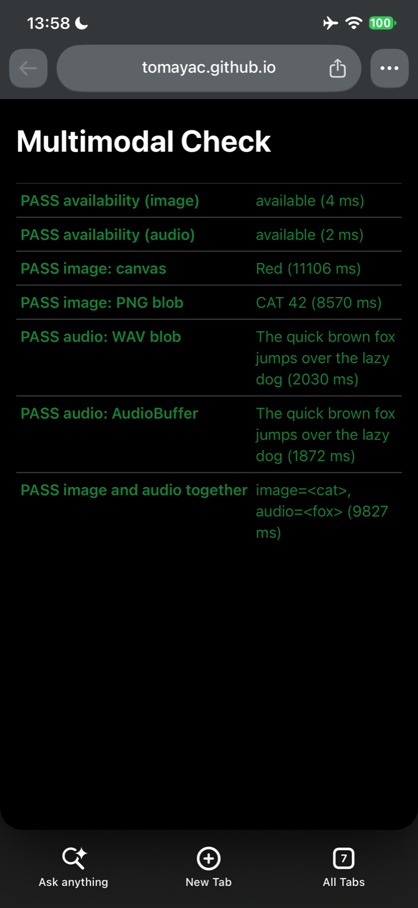
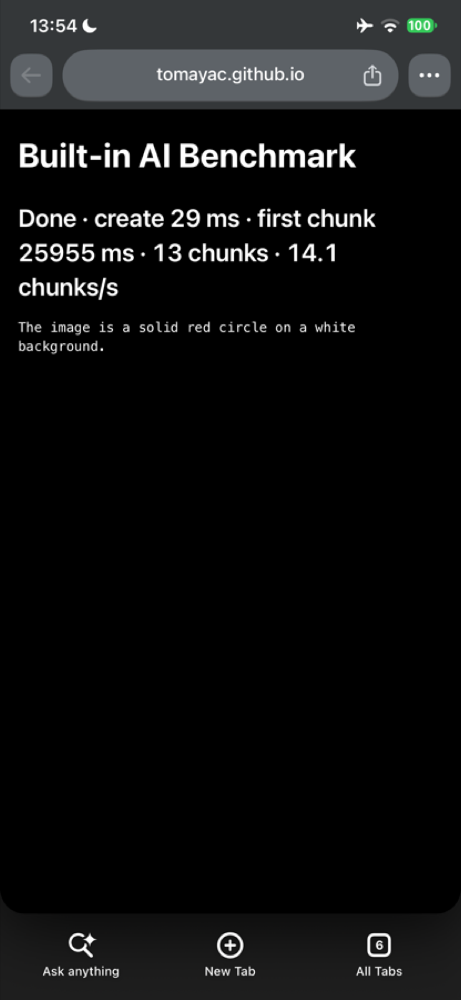

Chromium AI
The built-in AI APIs on every page, on your iPhone
An experimental build of Chromium for iOS where every web page can use
LanguageModel (the Prompt API), Summarizer,
Writer, Rewriter, Translator, and
LanguageDetector. Inference happens on the device: with
Apple Foundation Models where the device has Apple Intelligence, and
with Gemma 4 E2B everywhere else.
The buttons open AltStore or SideStore on this iPhone and add the source. In other installers, add the source URL by hand. The .ipa is also available on its own.
Installing
- Set up AltStore (with AltServer on a Mac or PC) or SideStore with your Apple ID. A free Apple ID works.
- Tap Add to AltStore or Add to SideStore above.
- Install Chromium AI from the source.
- Open a page that uses the APIs, such as the test pages.
Things to know
- On devices without Apple Intelligence, the first prompt downloads Gemma 4 E2B: 2.0 GB for text, and 2.6 GB more for image and audio input. Use Wi-Fi. Downloads resume if they stop, and all sites share the files.
- Apps installed with a free Apple ID stop opening after seven days unless AltStore or SideStore refreshes them. A free Apple ID can have three sideloaded apps at a time.
- The app asks for the Increased Memory Limit capability, which gives Gemma room on iPhones with 4 GB of memory. AltStore grants it to free Apple IDs. If an installer drops it, larger prompts may make iOS close the app.
- Text prompts with Apple Foundation Models need iOS 26, and image input needs iOS 27. The app installs from iOS 18, and has been tested on iOS 27.
- This is a personal experiment, and not an official Google or Chromium product. Sign-in, sync, and other Google services are not part of Chromium.
Screenshots


Source code
The Chromium patches, the polyfill bundle, and the tools that build this release are on GitHub.